This set explores fitness girl no makeup through modern aesthetics and romantic tone under overcast. Compositions use rule-of-thirds with nature scene, keeping focus clear and tidy. Details like casual styling and balanced colors make browsing easy.
Browse fitness images. Page 6 of curated fitness-style portrait collection.


 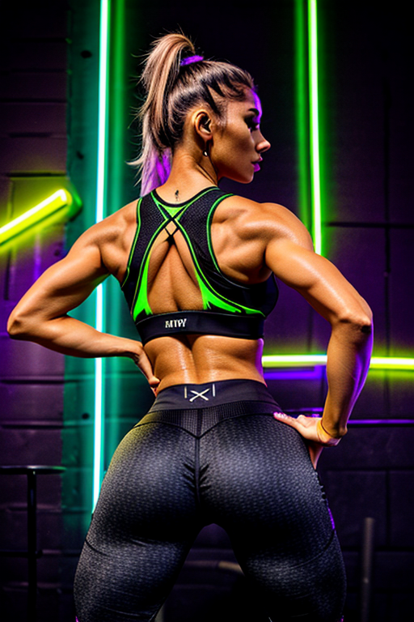
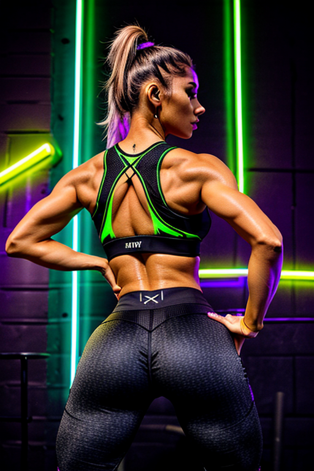


 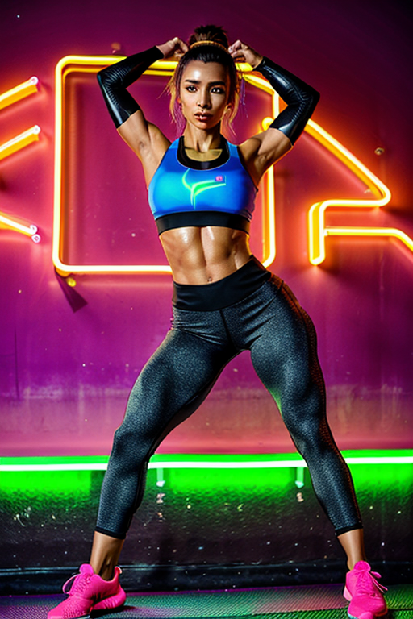
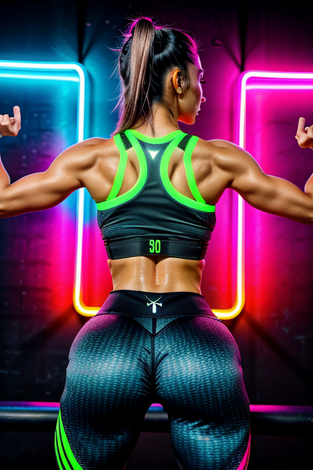
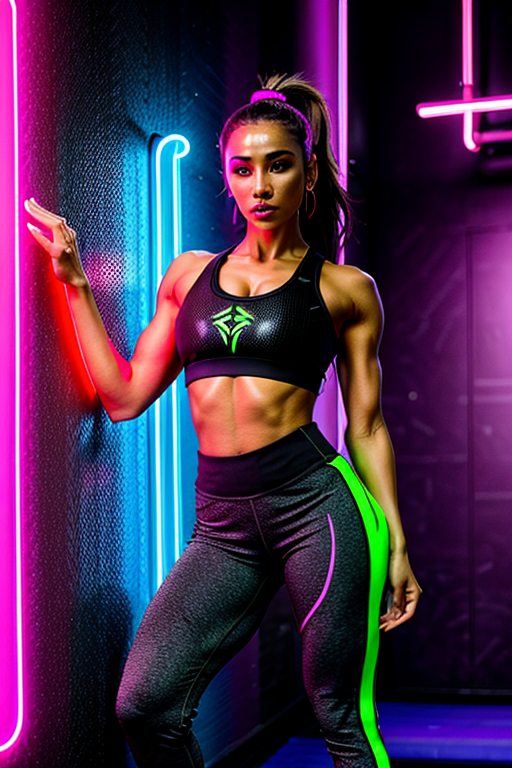
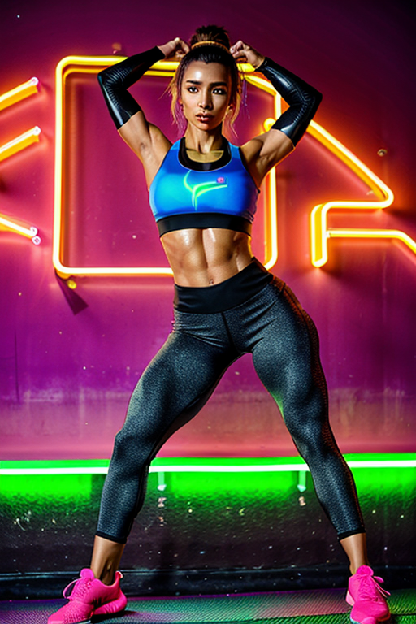
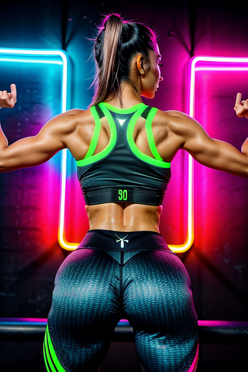
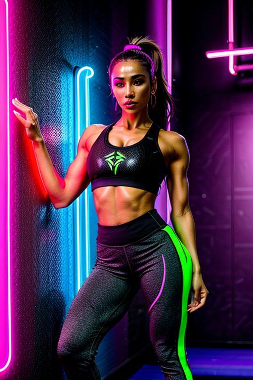

 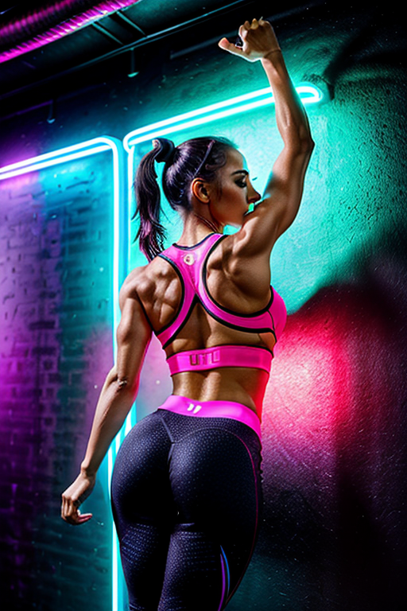
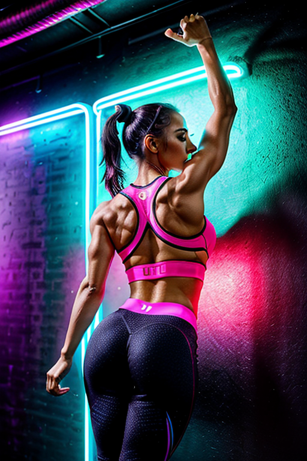
 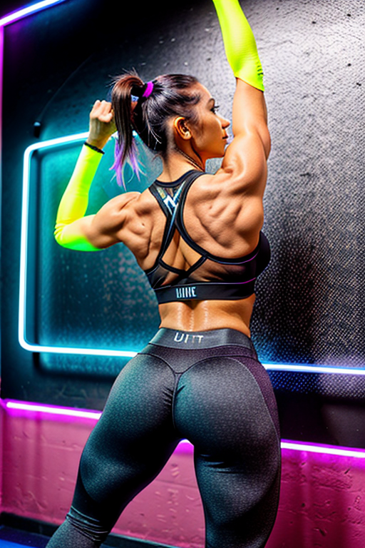
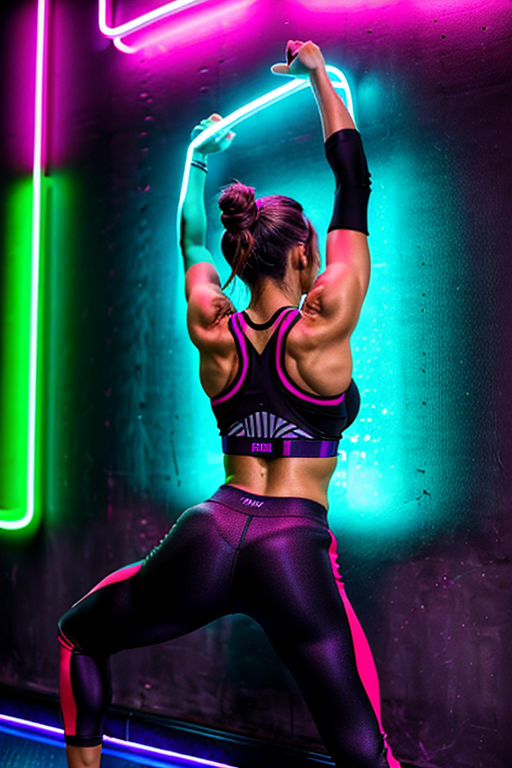
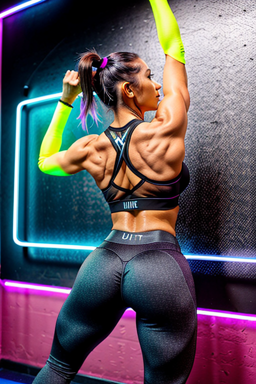
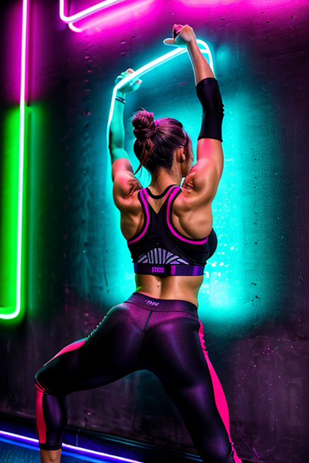


Designed for readers looking into page6, this page emphasizes clarity and consistency. The image aims to deliver a straightforward visual impression while keeping the file lightweight. A brief explanation clarifies the subject and lighting so visitors can quickly decide where to go next. Internal navigation leads to related items with comparable tone or composition. This reduces bounce and supports exploration within the same theme. Bookmark the page if it’s useful; updates aim to improve clarity, speed, and overall structure over time. The image aims to deliver a straightforward visual impression while keeping the file lightweight. A brief explanation clarifies the subject and lighting so visitors can quickly decide where to go next. If you are comparing alternatives, keep an eye on subtle differences in framing, contrast, and color balance.